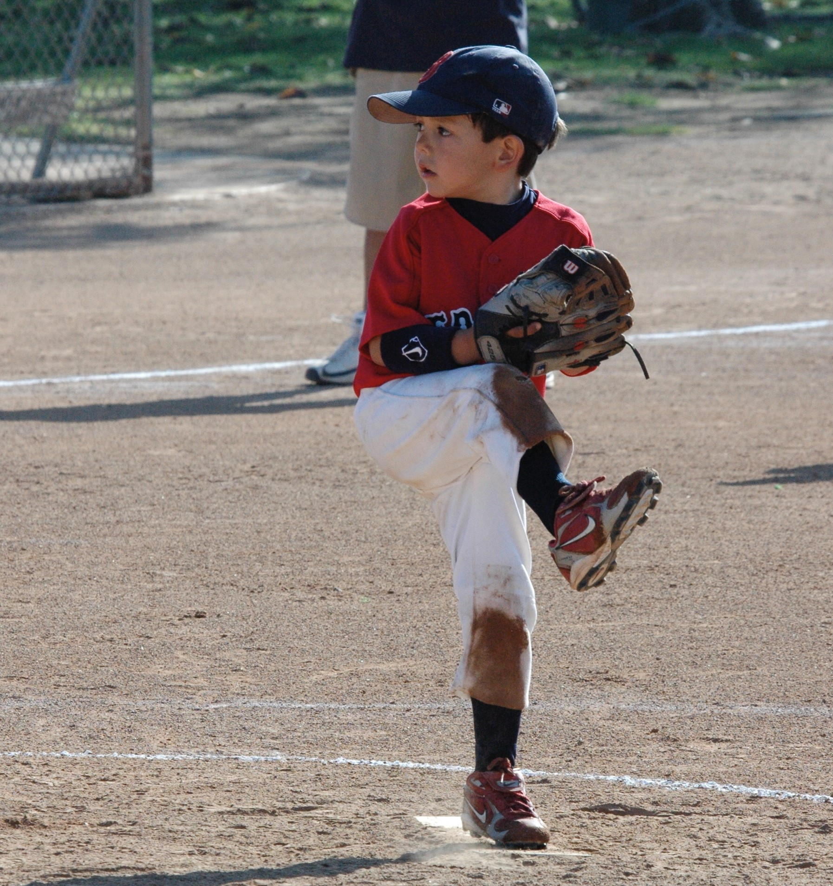

Younger Self

Up until I was six years old, I grew up in Anaheim, CA playing baseball, soccer, and basketball, before I moved out to Chino Hills and continued playing each sport. I attended St. Norbert's Elementary for K-1st grade, Butterfield Elementary for 2nd and 3rd grade, and O.P.A from 4th to 8th grade. Throughout the years, sports have always been a huge part of my life. I have never gone more than a month without playing a sport and without playing, I wouldn't be the same person I am today. The most memorable team I have played for was the Chino Hills Thunder, coached by my Dad, the toughest coach out there. On this team we were jokes, all messing around and childish in the dugout, but when it came time to play we won, constantly. We built ourselves up to winning a big Arizona tournament and coming back from 7-1 down, to placing 2nd in California.